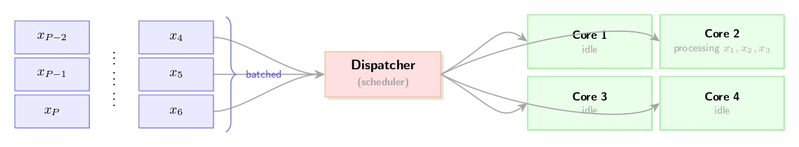
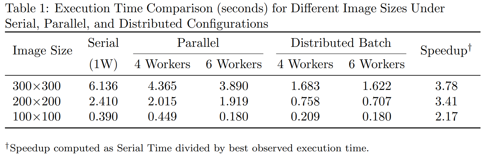

Hyperspectral imaging unmixing
Our Method
Unmixing the image
Unmixing is used to turn each pixel’s rich spectrum into a map of which materials are present and how much of each. The hyperspectral data feeding unmixing come from several contexts (eg: airborne sensors, spaceborne imaging-spectroscopy missions.)
The model we are using to decompose the image into the sum of the contributions of the endmembers is:
\[ \mathbf{X} = \mathbf{S}\mathbf{A} + \mathbf{E} \]\(\mathbf{X}\in \mathbb{R}^{L\times N}\) : data matrix
\(\mathbf{S}\in \mathbb{R}^{L\times P}\) : endmember matrix
\(\mathbf{A}\in \mathbb{R}^{P\times N}\) : abundance matrix
\(\mathbf{E}\in \mathbb{R}^{L\times N}\) : additive noise matrix
where \(L\) is the number of spectral bands, \(P\) is the number of materials, and \(N\) is the number of pixels
We estimate the abundance matrix using a least squares formulation:
\[ \hat{A} = \underset{\mathbf{A}>\mathbf{0}, \mathbf{1}_{P}^T \mathbf{A} = \mathbf{1}_{N}^{T} }{\textrm{arg min}}\frac{1}{2}||\mathbf{X}-\mathbf{SA}||_{F}^{2} = \underset{\mathbf{A}>\mathbf{0}, \mathbf{1}_{P}^T \mathbf{A} = \mathbf{1}_{N}^{T} }{\textrm{arg min}}\frac{1}{2} \sum_{i=1}^{N} ||\mathbf{x}_{n}-\mathbf{S}\mathbf{a}_{n}||_{2}^{2} \]where \(\mathbf{1}_{.}\) is a vector of ones whose size is given in index.
We look for solution that respects the following conditions:
- \(a_n>0\)
- \(\sum_{i=1}^{P}a_n^i = 1\)

Finding the optimal matrix of parameters A
The goal is to minimize the Frobenius norm of the reconstruction error, which can be decomposed into the sum of the \(L_2\) norms of the individual columns (samples).
\[ \hat{A} = \underset{\mathbf{A}>\mathbf{0}, \mathbf{1}_{P}^T \mathbf{A} = \mathbf{1}_{N}^{T} }{\textrm{arg min}}\frac{1}{2}||\mathbf{X}-\mathbf{SA}||_{F}^{2} = \underset{\mathbf{A}>\mathbf{0}, \mathbf{1}_{P}^T \mathbf{A} = \mathbf{1}_{N}^{T} }{\textrm{arg min}}\frac{1}{2} \sum_{i=1}^{N} ||\mathbf{x}_{n}-\mathbf{S}\mathbf{a}_{n}||_{2}^{2} \]To find the update rule, we take the partial derivative of the loss function \(L\) with respect to a single coefficient vector \(a_w\) (representing the \(w\)-th column of \(A\)):
\[ \frac{\partial L}{\partial a_w} = \frac{1}{2} \frac{\partial}{\partial a_w} (x_w - S a_w)^T (x_w - S a_w) \]Expanding via the chain rule:
\[ = \frac{1}{2} \left( -S^T (x_w - S a_w) - S^T (x_w - S a_w) \right) \]Simplifying:
\[ = -S^T (x_w - S a_w) \]Distributing the terms:
\[ = -S^T x_w + (S^T S) a_w \]The coefficient vector is updated iteratively using gradient descent were \(\gamma\) is the learning rate:
\[ a_w \leftarrow a_w - \gamma \frac{\partial L}{\partial a_w} \]Projection on the constraint space
The projection used is the Euclidean projection of a vector \(y\in\mathbb{R}^P\) onto the standard probability simplex
\[ \Delta^{P} = \left\{a\in\mathbb{R}^P: a_i \ge 0\ \forall i,\ \mathbf{1}_P^\top a = 1\right\}. \]The projection is defined by the quadratic program
\[ \operatorname{proj}_{\Delta}(y) = \arg\min_{a\in\Delta^{P}} \frac{1}{2}|a-y|_2^2. \]This is the operation needed to project the result of the gradient descent from the first optimization problem: \(y = a^{(k)} - \eta \nabla f(a^{(k)})\) into:
\[ a^{(k+1)} = \operatorname{proj}_{\Delta}(y) \]Derivation (KKT) and closed form structure
Form Lagrangian with multiplier \(\lambda\) for the equality constraint and multipliers \(\mu_i\ge 0\) for each nonnegativity constraint:
\[ \mathcal{L}(a,\lambda,\mu) = \tfrac{1}{2}|a-y|_2^2 + \lambda(\mathbf{1}^\top a - 1) - \mu^\top a. \]Stationarity: \(\nabla_a \mathcal{L} = a - y + \lambda \mathbf{1} - \mu = 0\), so
\[ a_i = y_i - \lambda + \mu_i, \quad i=1,\dots,P. \]Complementary slackness: if \(a_i>0\) then \(\mu_i=0\), so for active (positive) coordinates
\[ a_i = y_i - \lambda. \]For coordinates where \(a_i=0\), we must have \(y_i - \lambda \le 0\).
Therefore the solution has the form
\[ a_i = \max\left\{y_i - \lambda, 0\right\}. \]The equality constraint \(\sum_i a_i = 1\) determines \(\lambda\):
\[ \sum_{i=1}^P \max\left\{y_i - \lambda,0\right\}=1. \]So computing the projection reduces to finding the correct scalar \((\lambda)\).
If we ordered \(y_i\) in decreasing (\(y_{(1)} \geq y_{(2)} \geq \dots\)), there will be \(\rho\) positive such that for \(\rho\) elements, we have :
\[ \sum_{i=1}^\rho (y_{(i)} + \lambda) = 1 \]If we isolate \(\lambda\), we get the formula used in the code:
\[ \rho \lambda + \sum_{i=1}^\rho y_{(i)} = 1 \implies \lambda = \frac{1 - \sum_{i=1}^\rho y_{(i)}}{\rho} \]We look for the largest \(\rho\) such that \(w_\rho > 0\) (soit \(y_{(\rho)} + \lambda > 0\)) is respected.
Sorting The standard efficient algorithm finds the active set by sorting \((y)\) in descending order and scanning cumulative sums to find the largest index \((\rho)\) such that the associated \((\lambda)\) makes those \((\rho)\) entries positive. The KKT conditions guarantee this yields the correct active set and lambda.
Complexity: sorting dominates: (O(P log P)) per projection, plus (O(P)) for the scan. For moderate (P) (e.g. P small, materials count), this is cheap.
Parallelization methode 1

The first method is to vectorize over each individual parameter (which are mutually independent); each worker then computes for a set number of iterations (200):
\[ y = a_w - \gamma \frac{\partial L}{\partial a_w} \] \[ a_w \leftarrow \mathcal{max}\left\{ y + 1_{P}\lambda, 0 \right\} \]with:
\[ \lambda = \frac{1 - \sum_{i=1}^\rho y_{(i)}}{\rho} \]and:
If we ordered \(y_i\) in decreasing (\(y_{(1)} \geq y_{(2)} \geq \dots\)) \(\rho\) is defined as:
\[ \rho = arg max\left\{\frac{1 - \sum_{i=1}^\rho y_{(i)}}{\rho}, \rho \in {\mathbb{N}}\right\} \]Proposed methode
This High-performance method adds more work per worker, the current Julia implementation yields a 3.7x improvement over the original serial implementation and a 2.5x improvement over the previous parallelization
Given a matrix \(S\) composed of column vectors \(s_1, s_2, s_3, s_4\):
\[ S = \begin{pmatrix} s_1 & s_2 & s_3 & s_4 \end{pmatrix} \]The transformation of a vector \(l_1\) by \(S^T\) is defined as:
\[ y_1 = S^T l_1 = \begin{pmatrix} s_1^T \\ s_2^T \\ s_3^T \\ s_4^T \end{pmatrix} l_1 = \begin{pmatrix} s_1^T l_1 \\ s_2^T l_1 \\ s_3^T l_1 \\ s_4^T l_1 \end{pmatrix} \]Note: \(s_1^T l_1 = l_1^T s_1\): Scalar property of dot products
The matrix \(Y\) is constructed by stacking the transposed vectors \(y_i^T\):
\[ Y = \begin{pmatrix} y_1^T \\ y_2^T \\ y_3^T \end{pmatrix} = \begin{pmatrix} s_1^T l_1 ,& \dots ,& s_4^T l_1 \\ s_1^T l_2 ,& \dots ,& s_4^T l_2 \\ s_1^T l_3 ,& \dots ,& s_4^T l_3 \end{pmatrix} = \begin{pmatrix} s_1 l_1^T ,& \dots ,& s_4 l_1^T \\ s_1 l_2^T ,& \dots ,& s_4 l_2^T \\ s_1 l_3^T ,& \dots ,& s_4 l_3^T \end{pmatrix} = L^T S \]Where: \(L^T = \begin{pmatrix} l_1^T \\ l_2^T \\ l_3^T \end{pmatrix}\)
We define \(l_i\) based on a relationship with \(S\) and a vector \(a_i\):
\[l_1 = S a_1 - x_1\]We can then express \(L^T\) as:
\[ L^T = \begin{pmatrix} l_1^T \\ l_2^T \\ l_3^T \end{pmatrix} = \begin{pmatrix} (S a_1)^T - x_1^T \\ (S a_2)^T - x_2^T \\ (S a_3)^T - x_3^T \end{pmatrix} \] \[ L^T = \begin{pmatrix} (S a_1)^T \\ (S a_2)^T \\ (S a_3)^T \end{pmatrix} - X^T \]Expanding \((S a_i)^T\) as \(a_i^T S^T\):
\[ L^T = \begin{pmatrix} a_1^T \\ a_2^T \\ a_3^T \end{pmatrix} S^T - X^T \]Let \(A = \begin{pmatrix} a_1^T \\ a_2^T \\ a_3^T \end{pmatrix}\). Substituting \(X\) back into the equation for \(Y\):
\[ Y = L^T S = (A S^T - X^T) S \]Final Identity:
\[ Y = A S^T S - X^T S \]Results
Benchmark Discussion
When we look at the results of these benchmarks,we can draw a few important conclusions about how the system is performing:
I. Impact of Algorithmic Optimization
We noticed that the batching optimization significantly improved the latency of the reconstruction while maintaining an \(L^0\) norm between the 2 parameter matrices of the serial and batched versions of \[L^0 = \left| A^{serial} - A^{batched} \right| = 3 \times 10^{-13}\].
By rewriting the gradient to use \(G = S^TS\), we've significantly reduced the workload. In the original version, we were multiplying a \(144 \times 4\) matrix in every single iteration. Now, we'are using a \(4 \times 4\) matrix. we expect the Serial Time to be much faster than before.
III. Speedup and Scalability
we've noticed that as the image size increases, our parallel efficiency improves. This happens because the time we spend setting up the workers and broadcasting data becomes a smaller fraction of the total work.
IV. Geometric Constraints
The high reconstruction error observed in water regions can be attributed to the poor and weak signal returned from water surfaces in hyperspectral imagery. Water strongly absorbs electromagnetic radiation across most visible, near-infrared, and shortwave infrared wavelengths, resulting in very low reflectance values, reduced spectral variability, and limited spatial texture. Consequently, the spectral signatures of water pixels are often low-contrast and less informative compared to surrounding land cover. This lack of discriminative spectral information makes it difficult for the model to accurately learn and reconstruct water regions, leading to higher reconstruction errors relative to non-water areas.
Reconstruction Discussion
The high reconstruction error observed in water regions can be explained by the poor and uninformative signal returned from water surfaces. In optical imagery, water strongly absorbs electromagnetic radiation, resulting in low reflectance, limited texture, and reduced contrast. In radar imagery, smooth water surfaces tend to produce specular reflection, causing most of the radar energy to be reflected away from the sensor and leading to very low backscatter. As a result, these regions contain fewer discriminative features for the model to learn and reconstruct accurately, which leads to elevated reconstruction errors compared to surrounding land areas.